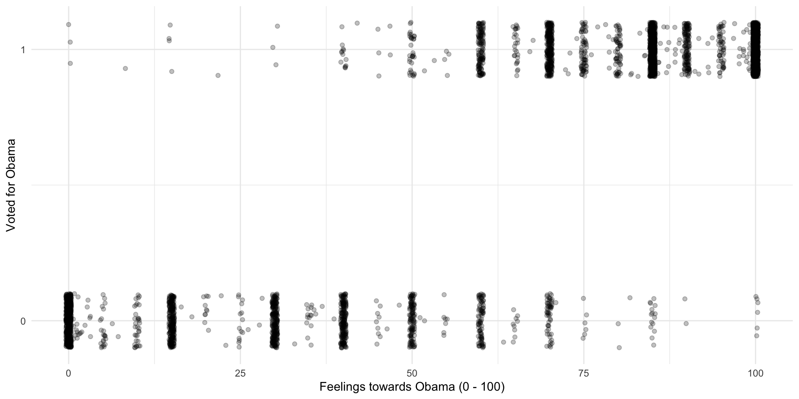
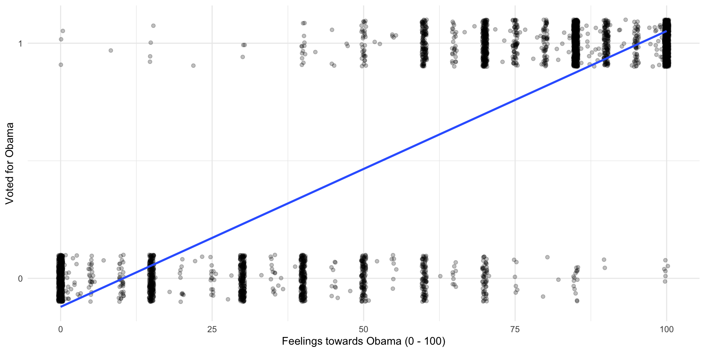
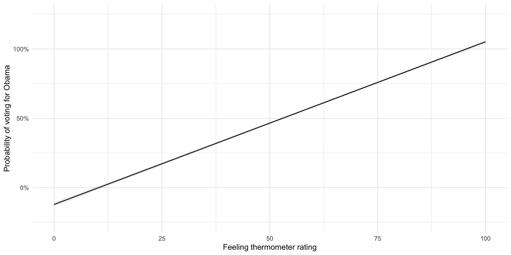
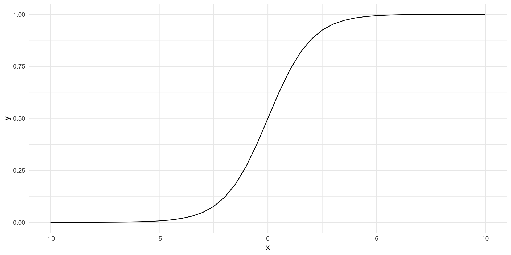
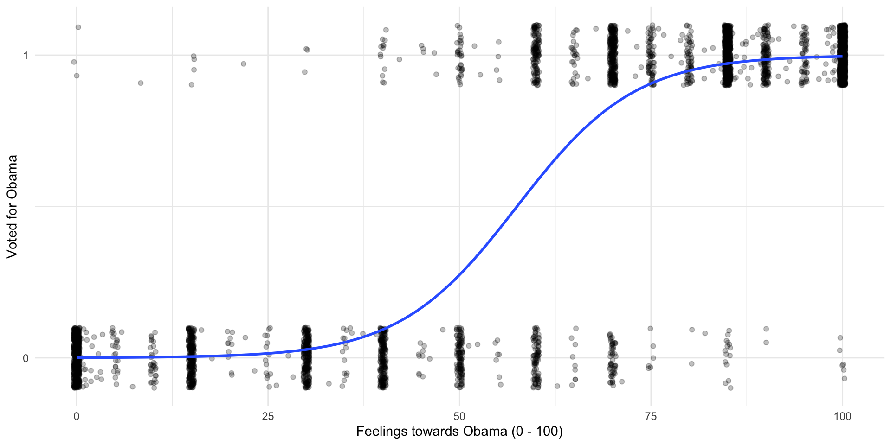
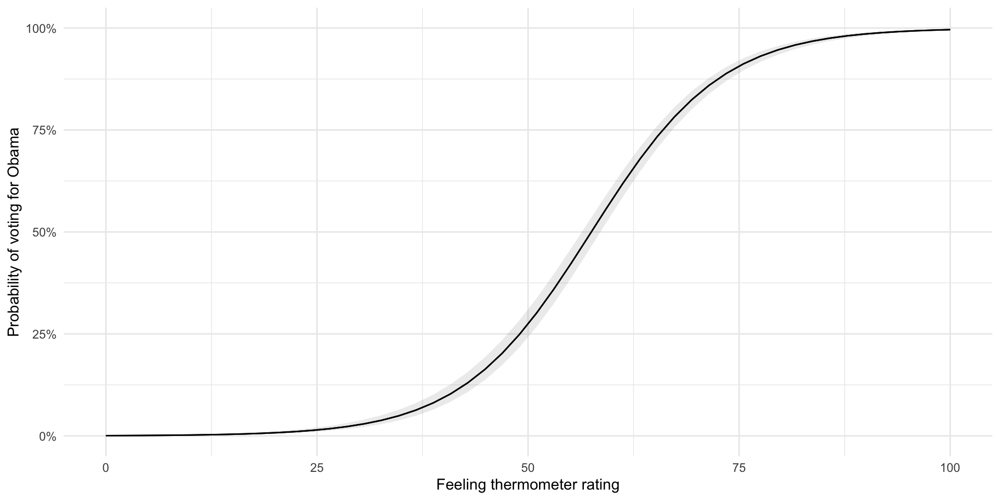

install.packages(c("tidyverse", "broom", "modelsummary", "marginaleffects",
"janitor", "scales", "polisciols"))Session 9: Modelling Binary Outcomes
Set up
To complete this session, you need to load in the following R packages:
Install packages
To install new R packages, run the following (excluding the packages you have already installed):
Introduction to binary outcomes
We often want to better understand binary outcomes: voted, or not; at war, or not; signed a treaty, or not. We need to adapt our models linking the predictors of interest to these binary outcomes. This lab session, we will step through some common approaches to doing this.
Predicting whether or not someone voted for Obama in 2012
We are going to use information about individuals’ political preferences to predict whether or not they voted for Obama in 2012. To do this, we will use the National Election Survey from that year:
nes <- nes |>
drop_na(obama_vote, obama_therm)Let’s start by looking how people who voted or did not vote for Obama felt about him. I suspect that individuals with warmer feelings towards Obama tended to vote for him more than those who had less warm feelings towards him.
ggplot(nes, aes(x = obama_therm, y = obama_vote)) +
geom_jitter(alpha = 0.25, height = 0.1) +
theme_minimal() +
labs(x = "Feelings towards Obama (0 - 100)",
y = "Voted for Obama") +
scale_y_continuous(n.breaks = 2)
Tip
I have used geom_jitter() to better visualize these points.
So, it looks like people behaved as we expected them to: those who felt warmly of Obama tended to vote for him, and those who felt cooler towards him tended not to. However, this rule is not absolute: some people who felt very warmly for Obama did not vote for him and some who did not like him voted for him.
To illustrate, let’s look at all of the people who gave Obama a rating of 75 or greater. What proportion of them also voted for him in 2012?
obama_vote n percent
0 32 0.01601602
1 1966 0.98398398Okay, so 98% of these individuals voted for Obama. That leaves 2% of those with strongly warm feelings of Obama who did not vote for him.
If I asked you to predict whether an individual voted for Obama and I told you that 98% of people who gave him a rating of 75 or greater voted for him, you would probably ask what rating the individual in question gave him. It seems to be an important predictor of their vote!
In other words, if I wanted to build a model predicting the likelihood any given individual would vote for Obama, I would include in that model the individual’s feeling thermometer rating for Obama as a variable.
Let’s do that!
Linear probability model (LPM)
Let’s start simply by drawing a straight line between these two clusters of points. As with all linear regression models, we want to draw the line that minimizes the distance between itself and all of the observed points.
ggplot(nes, aes(x = obama_therm, y = obama_vote)) +
geom_jitter(alpha = 0.25, height = 0.1) +
geom_smooth(method = "lm", se = F) +
theme_minimal() +
labs(x = "Feelings towards Obama (0 - 100)",
y = "Voted for Obama") +
scale_y_continuous(n.breaks = 2)
m_lpm <- lm(obama_vote ~ obama_therm, data = nes)
modelsummary(m_lpm,
coef_rename = c("obama_therm" = "Thermometer rating of Obama (0 to 100)"),
stars = T,
gof_map = "nobs")| (1) | |
|---|---|
| + p | |
| (Intercept) | -0.121*** |
| (0.008) | |
| Thermometer rating of Obama (0 to 100) | 0.012*** |
| (0.000) | |
| Num.Obs. | 4167 |
Interpreting an LPM
Although this looks a lot like our familiar linear regression model, we interpret its estimates differently. Instead of estimating the value of the outcome variable, we are estimating the probability that the outcome variable will be equal to one (or that an individual voted for Obama).
As expected, the model suggests that individuals with higher ratings of Obama were more likely to vote for him. Each increase in individuals’ rating of Obama is associated with a 1.2% increase in the probability that they voted for Obama.
Predicted probabilities
Let’s look at what the model predicts the probability of voting for Obama to be for every value of the feeling thermometer:
plot_predictions(m_lpm, condition = "obama_therm") +
theme_minimal() +
labs(x = "Feeling thermometer rating",
y = "Probability of voting for Obama") +
scale_y_continuous(label = percent, limits = c(-0.25, 1.25))
So, there are a couple of issues with this approach. First, our model predict probabilities that are greater than 100% and less than 0%. Those who gave Obama a rating of 0 are predicted to vote for him with a probability of -12%. Those who gave him a rating of 100 are predicted to vote for him with a probability of 105%.
Second, and more importantly, this constant effect does not really reflect our understanding of individuals’ political behavior. Individuals who really do not like Obama are very unlikely to vote for him.
obama_vote n percent
0 908 0.990185387
1 9 0.009814613Individuals who really like Obama are very likely to vote for him.
obama_vote n percent
0 32 0.01601602
1 1966 0.98398398A shift from a rating of 0 to 1, or from 99 to 100, is probably not going to change the likelihood that these individuals with strong opinions of Obama will vote for him.
On the other hand, individuals in the middle are more likely to swing towards or away from him if their view of him warms or cools.
obama_vote n percent
0 426 0.6915584
1 190 0.3084416A linear probability model does not reflect these differences. Happily, we can do better (…than economists).
Logistic regression
A logistic regression model solves these problems. Formally, the inverse logistic function is:
\[ Pr(Y = 1 | X) = logit^{-1}(X) = \frac{e^X}{1 + e^X} \]
But don’t worry too much about that. Let’s instead look at its shape:
tibble(x = seq(-10, 10, by = 0.5), y = plogis(x)) |>
ggplot(aes(x = x, y = y)) +
geom_line() +
theme_minimal()
This is great! The outcome (probability of success) is bounded between 0 and 1 as all probabilities are. Also, changes to our DV do not produce uniform changes in that outcome.
Lets fit this model to our data:
ggplot(nes, aes(x = obama_therm, y = obama_vote)) +
geom_jitter(alpha = 0.25, height = 0.1) +
geom_smooth(method = "glm", se = F, method.args = list(family = binomial(link = "logit"))) +
theme_minimal() +
labs(x = "Feelings towards Obama (0 - 100)",
y = "Voted for Obama") +
scale_y_continuous(n.breaks = 2)
m_logistic <- glm(obama_vote ~ obama_therm, data = nes, family = binomial(link = "logit"))
modelsummary(m_logistic,
coef_rename = c("obama_therm" = "Thermometer rating of Obama (0 to 100)"),
stars = T,
gof_map = "nobs")| (1) | |
|---|---|
| + p | |
| (Intercept) | -7.466*** |
| (0.290) | |
| Thermometer rating of Obama (0 to 100) | 0.130*** |
| (0.005) | |
| Num.Obs. | 4167 |
Interpreting a logistic regression
The coefficients presented above are log odds ratios. We can easily interpret their statistical significance and their sign. For example, we learn that as an individual’s feelings towards Obama increase, so too does the probability that they will vote for him. We also know that this relationship is statistically significant. Sadly, we can’t get much more from the regression table provided above.
Remember that logit (and probit) models are simply transformed linear models. We take our linear model of the relationship between an individual’s feelings towards Obama and the likelihood that they will vote for him and reshape it to better predict probabilities (bound between 0 and 1, with varying effects of changes of height on probability of success). Similarly, we can reshape these coefficients to make them easier to interpret.
Odds ratios
The regression coefficient provided above is a log odds ratio. Log-transformed variables are really hard to interpret. So, let’s get rid of that log. The opposite operation to taking the logarithm of a number is to take the exponential of it. To demonstrate:
# A tibble: 5 × 3
x log_x exp_log_x
<int> <dbl> <dbl>
1 1 0 1
2 2 0.693 2
3 3 1.10 3
4 4 1.39 4
5 5 1.61 5So, exponentiating the log odd ratio will get us the odds ratio. The odds ratio is much easier to interpret. If the probability of success of an outcome is \(p\) and, therefore, the probability of failure is \(1-p\), then , the the odds of success are \(\frac{p}{1-p}\). Now, dividing two odds by each other gives you their odds ratio.
For example, when the odds ratio is 1, the odds of success are the same as the odds of failure (\(\frac{0.5}{0.5} = 1\)). When the odds ratio is greater than 1, the odds of success are greater than the odds of failure (for example, \(\frac{0.8}{0.2} = 4\)). Where the odds ratio of success is four, the odds of success are four times higher than the odds of failure.
Getting back to our model, the odds ratio of the thermometer rating coefficient is:
\[ e^{0.130} = 1.14 \]
Or using R:
Therefore, our model predicts that by increasing an individual’s rating of Obama, the odds that they will vote for Obama increase by 0.14 (or \(1 - 1.14\)).
We can report the odds ratio in our regression table using modelsummary::modelsummary(exponentiate = T):
modelsummary(m_logistic,
coef_rename = c("obama_therm" = "Thermometer rating of Obama (0 to 100)"),
stars = T,
gof_map = "nobs")| (1) | |
|---|---|
| + p | |
| (Intercept) | -7.466*** |
| (0.290) | |
| Thermometer rating of Obama (0 to 100) | 0.130*** |
| (0.005) | |
| Num.Obs. | 4167 |
And we can also get these results programmatically using broom::tidy():
tidy(m_logistic, exponentiate = T)# A tibble: 2 × 5
term estimate std.error statistic p.value
<chr> <dbl> <dbl> <dbl> <dbl>
1 (Intercept) 0.000572 0.290 -25.7 5.40e-146
2 obama_therm 1.14 0.00457 28.4 6.74e-178Predicted probabilities
Odds ratios are certainly easier to interpret than log odds ratios, but they are still a little awkward. It is easier again to discuss the effects of changing our independent variables of interest in terms of probabilities, rather than odds.
Remember, the odds ratio is simply the odds of success divided by the odds of failure:
\[ OR = \frac{\frac{p}{1-p}}{\frac{1-p}{p}} \]
We are interested in getting the odds of success (\(p\)). To get this, we do the following:
\[ p = \frac{OR}{1+OR} \]
Or, more generally:
\[ Pr(Y = 1 | X) = \frac{e^{X\beta}}{1 + e^{X\beta}} \]
Or, more specifically:
\[ Pr(obama\_vote = 1 | obama\_therm) = \frac{e^{−7.466 + 0.130obama\_therm + \epsilon}}{1 + e^{−7.466 + 0.130obama\_therm + \epsilon}} \]
Importantly, we need to know our individual’s rating of Obama to predict the probability that they will vote for him. This makes sense! The slope of our model is not constant.
When an individual gives Obama a rating of zero, our model predicts that there is a 0.06% chance they will vote for Obama.
How did I get that?
\[ Pr(obama\_vote = 1 | obama\_therm = 0) = \frac{e^{−7.466 + 0.130 * 0}}{1 + e^{−7.466 + 0.130 * 0}} = \frac{e^{−7.466}}{1 + e^{−7.466}} = 0.0006 \]
Or in R:
When an individual gives Obama a rating of 50, our model predicts that there is a 37.78% chance they will vote for Obama.
When an individual gives Obama a rating of 100, our model predicts that there is a 24 937.68% chance they will vote for Obama.
We can plot these predicted probabilities for each value of the thermometer rating:
plot_predictions(m_logistic, condition = "obama_therm") +
theme_minimal() +
labs(x = "Feeling thermometer rating",
y = "Probability of voting for Obama") +
scale_y_continuous(label = percent, limits = c(0, 1))
Quiz
Head over to ELMs to complete this session’s quiz. You need to score 80% on it to gain access to the next session’s quiz.